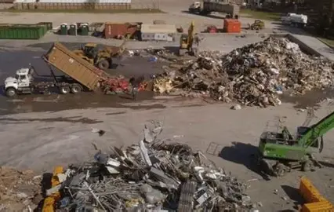
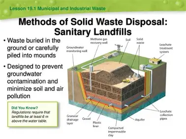
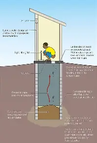
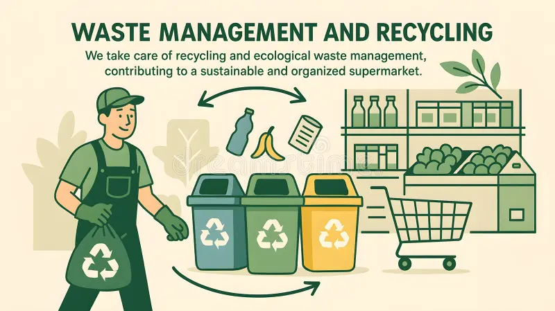

WEEK 4: FAMILY HEALTH (SANITATION)
4.1 Meaning of Environmental Sanitation
Environmental sanitation is the practice of keeping the surroundings (home, school, market, streets, water sources) clean and free from dirt, waste and disease-causing organisms. It includes the proper disposal of waste, the supply of safe water, control of pests and the safe handling of food.
Why sanitation is important:- Prevents diseases such as cholera, typhoid, dysentery and malaria.
- Prevents bad smells and flooding caused by blocked drains.
- Controls pests (flies, mosquitoes, rats, cockroaches).
- Makes the environment beautiful and comfortable.
- Protects water sources from contamination.
- Sweeping and clearing the surroundings regularly.
- Cutting grasses and bushes around the house.
- Draining stagnant water and clearing gutters.
- Using toilets and not defecating in the open.
- Disposing of waste in the right place.
- Participating in the monthly environmental sanitation exercise in the community.
4.2 Waste, Refuse and Sewage
Waste is any unwanted or useless material that is thrown away.
Refuse is solid waste from homes, schools, markets and offices, such as paper, nylon, tins, bottles, food remains and ash. Refuse is also called garbage or rubbish.
Sewage is liquid waste from homes and industries, mainly water mixed with human waste (faeces and urine), bath water and kitchen water.
| Type | Meaning | Examples |
|---|---|---|
| Refuse(solid waste) | Dry or solid unwanted materials | Paper, plastic, tins, bottles, glass, leftover food, ash |
| Sewage (liquid waste) | Liquid waste carrying human and household waste | Toilet waste, bath water, kitchen water, factory liquid waste |
| Industrial waste | Waste from factories | Chemicals, scrap metals, oil |
| Agricultural waste | Waste from farms | Animal dung, crop remains |
| Hospital (clinical) waste | Waste from hospitals | Used syringes, bandages, expired drugs |
Classification of waste:
- Biodegradable waste : This kind of waste can rot and be broken down by bacteria (food remains, leaves, paper, animal dung).
- Non-biodegradable waste : This kind of waste cannot rot easily (plastics, glass, metals, rubber, tins).
4.3 Methods of Waste Disposal
-
Dumping (open dumpsite / refuse dump)
- Waste is collected and thrown in a designated dumping place.
- Advantage: Cheap and easy.
- Disadvantage: Produces bad smell, attracts flies and rats, may pollute the air and water.
-
Burning (incineration)
- Dry refuse is burnt in an incinerator or open pit.
- Advantage: Reduces the volume of waste and kills germs.
- Disadvantage: Produces smoke and gases that pollute the air; not good for plastics.
-
Burying (landfill)
- Waste is dug into a deep pit and covered with soil.
- Advantage: Controls smell and pests; the land can be reused later.
- Disadvantage: Needs a large space and may contaminate underground water.
-
Composting
- This is when Biodegradable waste is allowed to decay to form manure
-
Recycling
- Used materials are collected and processed into new products (plastic bottles into new plastics, scrap metal into new metal, waste paper into new paper).
- Advantage: Saves resources and reduces pollution.
-
Reusing
- Using an item again (e.g. empty bottles, tins, nylon bags).
-
Sewage disposal methods:
- Pit latrine : This is a deep hole in the ground covered with a slab.
- Water closet (WC) / flush toilet : This is when waste is flushed into a septic tank or sewer.
- Septic tank : This is an underground tank where bacteria break down sewage.
- Sewage treatment plant : This is when sewage is treated in a plant before being released.
- Bucket / bush toilets waste disposal methods are unhealthy and discouraged.






Rules for good refuse disposal:
- Use covered dustbins.
- Separate waste (food waste, paper, plastics, glass).
- Do not litter the surroundings, gutters or rivers.
- Empty dustbins regularly or use the waste collection services.
4.4 Compost Making

Compost is a dark, rich, soil-like manure made when plant and animal wastes decay naturally under the action of bacteria and fungi.
Materials needed:
- Green materials (rich in nitrogen): fresh grass, vegetable peels, fruit remains, kitchen scraps, animal manure.
- Brown materials (rich in carbon): dry leaves, straw, sawdust, paper, cardboard.
- Water, soil and a spade or fork.
Procedure (pit or heap method):
- Dig a pit about 1 metre deep, or choose a shaded place for a heap.
- Spread a layer of dry materials (leaves, straw) at the bottom for air flow.
- Add a layer of green materials (vegetable waste, grass, manure).
- Add a thin layer of soil to supply decomposing organisms.
- Sprinkle water to keep it moist (not wet).
- Repeat the layers until the pit or heap is full.
- Cover it with leaves or a sack to keep in heat and moisture.
- Turn the heap every 2 weeks to supply air.
- After about 6 to 12 weeks, it turns dark brown and crumbly. It is now ready.
What NOT to put in a compost: plastic, glass, metal, bones, cooked food, oil, diseased plants, and dog or cat droppings.
Uses of compost:
- Improves soil fertility and structure.
- Cheap replacement for chemical fertilizers.
- Helps the soil to hold water.
- Reduces the volume of refuse.
- Is safe for the environment.